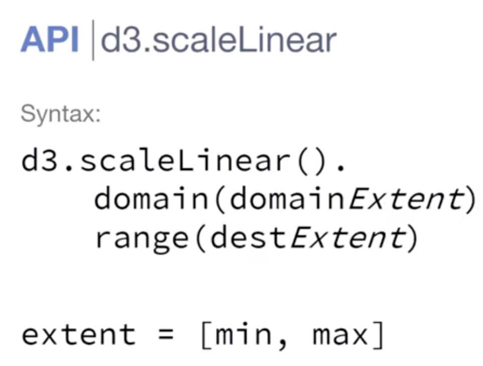

A. Numeric/Ordinal Scales
how we convert data from the original format to a format that i can use to draw.
I have no idea how to solve Error: Invalid value for
attribute width="NaN"
B. Adding axes annotations
